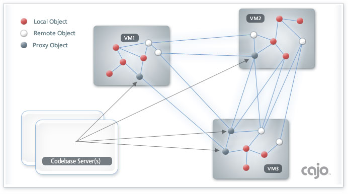

|
|
 |
|
Inside the cajo framework
|
|
 |
Every remotely accessible object in the framework is called an
Item. An application can host one or more items within its Virtual
Machine. Items can call other items, and an item can also be called by other
items. A special type of item is known as a Proxy.
Proxies are objects sent from one virtual machine, to execute in the context of
another. Proxies can also call, or be called, by other items, and even by
other proxies.
In the standard RMI framework, each remote object must have a unique
"stub" compiled for its callable methods. This can quickly become
burdensome, especially if the interaction between objects becomes highly
diverse; and is completely impossible when method signatures are unknown
at compile time. To address these issues, the framework defines only one
remote interface; called
Invoke. It defines a single method, to represent all object
methods; it accepts a method name, the arguments to be provided to it,
and the data to be returned; i.e.:
Object invoke(String method, Object args);
Note: it is highly recommended that rather than using
the invoke interface directly, always interact with an object reference
using the static invoke method of the
Remote class. It has the following signature:
Object Remote.invoke(Object object, String method, Object args);
It provides all the functionality of the invoke interface, but also works on
both remote objects, and ordinary local objects. This can allow code
to transparently scale from local to remote object use, even at runtime, with
no application source code changes.
|
|
|
|
|
|
The invocation of a method on a remote object using the Invoke interface is
made possible using the Remote class. It combines Java RMI with another
Java feature known as reflection. The Remote class takes any
object, and places a remotely invokable wrapper around it. When remote
objects execute the invoke method, Remote uses reflection to find the method
on its internal object, matching both the name and the argument types, if
any. If it is found, it executes that method, and returns the result, or
exception, if any. If no matching method can be found on the internal object,
a NoSuchMethodException is thrown. This technique effectively
makes all public methods of the internal object remotely callable.
|
|
|
|
|
An item can send mobile code, i.e. proxy items and complex object arguments
to clients using the CodebaseServer
class. CodebaseServer will create a very specialized http server on the
designated TCP port. It serves the specified jar file containing the class
files needed by the client, along with any other resources needed by the
proxies. The resources are typically, images and string tables. By default,
a client VM will not accept mobile code. This is typically enabled by
calling the
acceptProxies method of the
ItemServer class. This will install an RMISecurityManager to accept the
code, and protect the client hardware and files, it effectively creates an
applet-like sandbox around the incoming code. In essence, mobile code
means the client's VM is using classes from a codebase provided to it by the
server, over the network. The reason it is not enabled by default, is that
one or more proxies, or their complex arguments, could load a JVM
significantly. The acceptance of mobile code is an important
application specific design decision.
|
|
|
|
References to remote items can be easily passed to other items, as a method
argument, or return, even in an exception. They can also be written to disc,
and read back for use at some later time. However, obtaining initial
references is done via two standard mechanisms:
First, it is generally useful to
bind each item with the ItemServer class. ItemServer will automatically
create an rmiregistry, and bind the item under the name provided. Other
clients can now contact the registry, and obtain a remote reference to the
item by name. The rmiregistry, and the item communicate using the same TCP
port. Therefore, all that is required for a client to obtain a reference to
an item using this mechanism is the server host name, port number, and the
name under which the item is bound. Canonically, the default item for any
server is bound under the name "main". Obtaining a reference to a
bound remote item is accomplished using the static
getItem method of the Remote class. This mechanism is called linking
statically.
The second mechanism to obtain a reference to a remote item is using the
Multicast class. Unlike the previous method which uses TCP/IP to obtain
the reference, this technique uses UDP/IP. Instead of needing to know the
server's TCP address and port number, the client needs to know the UDP
address and port number the server will be using. The important difference
here is that servers can pick their UDP addresses, and they are
completely independent of their TCP address. Also, a server can use
multiple UDP addresses if needed. Multiple servers use the same
address, to form groups. A server broadcasts a remote reference
to an item by calling the
announce method of Multicast. This will send the reference to all
clients listening in the group. Items listen for these announcements
using the
listen method of Multicast. Use of UDP/IP, and multicasting in general,
has proven to be unfamiliar to a lot of developers, so an entire tutorial
page has been dedicated to the use of the Multicast class. Most
importantly, this mechanism allows JVMs to spontaneously form networks of
functionality by linking dynamically.
|
|
|
|
Essentially, any Java application is simply a collection of objects, used by a
virtual machine, to accomplish a specific purpose. This framework
transparently provides developers the object resources of other remote
virtual machines, with which to create applications.
For example; the paradigm could be represented graphically, something like
this:

Here we see that local objects can directly interact with other local
objects, even with local objects that are also remotely accessible by
other virtual machines. Additionally, they can interact with remote
objects of other virtual machines. They can even interact with proxy
objects loaded into their virtual machine, typically from other virtual
machines, whose class definitions would be provided by codebase servers.
They can even interact with remote proxy objects. Proxies have the same
connection options as local objects. In fact, every type of object can
freely interact with any other type of object within a virutal machine, and
even across virtual machine boundaries, with the exception of local objects
interacting with remote local objects.
It is important to keep in mind during application development: While this
framework makes the network appear logically transparent; it most
definitely is not physically transparent. A remote method call
can fail, or take a really long time, for a multitude of reasons, and at any
time. It is an inherent
nature of the network. It is very intuitive to treat remote object usage
like a telephone call: The line may be busy, the callee may not answer, or
the line may cut out unexpectedly. Be sure to include work-arounds for these
realities into your design.
Now relax; this has been a lot of material, presented in a very short
time. It took much longer to come up with this, than it did to explain it. So
now take a break, do something else, and let it soak in. Soon a profound
revelation will occur... Then, let me be the first to welcome you to:
The World Wide Virtual Machine!
|
|
All objects are local: machine boundaries, whether virtual or physical,
are merely conceptual.
|
|